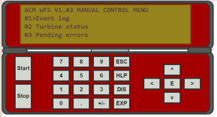

Es ist wichtig, immer daran zu denken, dass eine Windenergieanlage eineStromerzeugungsanlagemit einer Dicke von mehr als 20 mmautonom arbeiten. Mit anderen Worten, es ist eine Pflanze, die keine menschliche Präsenz erfordert zu arbeiten. Das bedeutet, dass es eineSteuersystemdie ordnungsgemäß programmiert ist, um alle möglichen Vorkommnisse zu berücksichtigen, wie
•externe Phänomene, wie Hurrikan-Kraftwinde, Blitzschläge, übermäßige oder sehr niedrige Temperaturen, oder
•durch das elektrische Netz erzeugte Störfällean die es angeschlossen ist (Phasenausfälle, Leitungsspannungen außerhalb von Grenzen, etc.), sowie
•interne Zwischenfälle, wie gebrochene hydraulische Komponenten, Sensor-Kalibrierfehler oder Bruch, übermäßige Vibrationen, Lagerprobleme, Generatortemperatur steigt, etc.
Der Controller ist programmiert, alle diese Vorfälle rechtzeitig zu erkennen und darauf zu reagieren. Dies bedeutet, dass die Art und Weise, mit einer Windenergieanlage zu interagieren, durch Kommunikation mit der Steuerung, die durch spezifischeDatenterminals. Diese können, wie in der folgenden Figur gezeigt, in das elektrische Paneel eingesetzt werden.

Oder sie können getrennt sein, in einem tragbaren Terminal, wie in der folgenden Figur.
